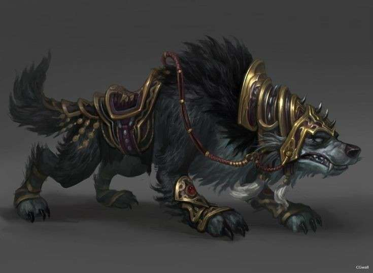

Force

Résistance
Dextérité
Magie

Ingénierie
Environnement : Archipel - La Péninsule Barbare - Garmindor
Durée de vie moyenne : 175 ans
Taille : G
Système politique : Tribus dirigées indépendamment, toutes sous la tutelle d'un haut-chef évitant les tensions
Statut politique : Membre de la ligne de Vésir
Relations hostiles : -
Alliés : Ligue de Vésir
Croyance : Myzias
Force
Résistance
Dextérité
Magie
Ingénierie
Capacités innées : Force surhumaine, résistance accrue aux coups et à la douleur
Facilités magiques : Druides (métamorphoses en animal, appel de la nature etc)
Impossibilités : Magie trop poussée en occultisme ou blanche
Les Taurens naquirent en - 1 600 aux côtés des Trolls. Ces deux peuples ont toujours vécu en harmonie et dans une sympathie réciproque, partageant leurs forces pour dompter les créatures des steppes et bâtir de grandes villes tribales. Ces cités, dirigées par des profils forts différents, menèrent à nombre de querelles, or le temps les fit s'estomper et une paix durable put s'installer, sous le commandement d'un haut-chef, dirigeant de toutes les tribus. Quelques années après la fin des conflits entre Méduses et Nagas, ces derniers vinrent s'exposer aux habitants de l'île Garmindor, leur amenant une spiritualité concrète, passant par les éléments et les fragments de couronne de Myriade. Depuis, les Taurens sont des membres à part entière de la Ligue de Vésir et vivent dans une stabilité complète, loin des batailles qui déchaînèrent le Nouveau-Monde.
Profil type : Chaleureux - Courageux - Honorable - Respectueux - Vaillant
Métier répandu : Druide
Alimentation : Omnivore - Chasse, cueillette et élevage
Montures : Grands-loups du Nord
Les Taurens ont une musculature imposante, faisant d'eux l'un des peuples les plus imposants de l'Yndrill. Pourtant, ce n'est pas leur taille qui frappe mais leurs attributs, étant dotés de cornes de bovidé, d'un visage allongé découlant sur une truffe, et d'une queue brassant l'air entre des vêtements traditionnels adaptés à sa présence. Si un tauren enragé peut être d'une dangerosité sans pareille, le peuple demeure bienveillant dans la majorité des cas et fort chaleureux avec les visiteurs de la Ligue.
Nombre d'OC de cette race sur Yndrill: -